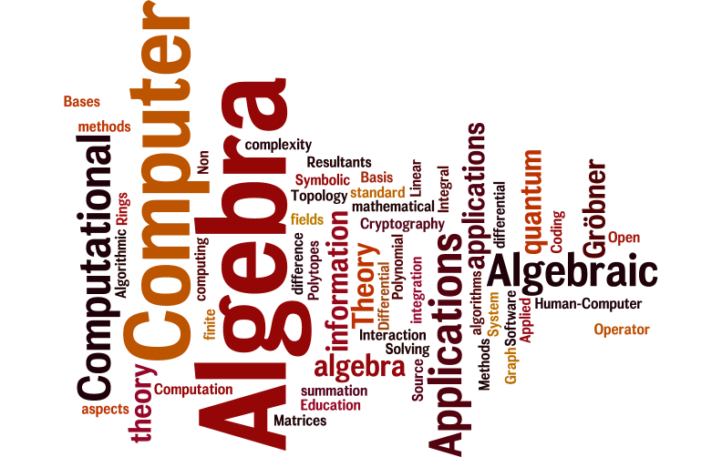

ACA 2015 Special Sessions

- S1.- Computer algebra in quantum computing and quantum information theory
- Organizers: Vladimir Gerdt, Michael Mc Gettrick, Jaroslaw Adam Miszczak, Arkadiusz Orlowski and Alexander Prokopenya
- S2.- Human-Computer Algebra Interaction
- Organizer: Manfred Minimair
- S3.- Computer Algebra in Education
- Organizers: Michael Wester, Alkis Akritas, Elena Varbanova, José Luis Galán García and Michel Beaudin
- S4.- Computer Algebra in Coding Theory and Cryptography
- Organizers: Irene Márquez-Corbella and Ruud Pellikaan
- S5.- Computational differential and difference algebra
- Organizers: Carlos Arreche, Alexey Ovchinnikov and Michael Wibmer
- S6.- Algebraic and Algorithmic Differential and Integral Operator
- Organizers: Moulay Barkatou, Thomas Cluzeau, Georg Regensburger and Markus Rosenkranz
- S7.- Symbolic summation and integration: algorithms, complexity, and applications
- Organizers: Carsten Schneider and Eugene Zima
- S8.- Algebraic Graph Theory and its Applications
- Organizers: Vasyl Ustimenko , Urszula Romańczuk-Polubiec, Aneta Wróblewska and Monika Polak
- S9.- Applied and Computational Algebraic Topology
- Organizers: Graham Ellis, Marian Mrozek, Aniceto Murillo, P. Real and Eduardo Saenz de Cabezón
- S10.- Non standard Applications of Computer Algebra
- Organizers: Francisco Botana, Antonio Hernando, Eugenio Roanes-Lozano and Michael Wester.
- S11.- Polynomial System Solving, Gröbner Basis, and Applications
- Organizers: Christian Eder, Jean-Charles Faugere, Ludovic Perret and Elias Tsigaridas.
- S12.- Computational aspects and mathematical methods for finite fields and their applications in information theory
- Organizers: Sihem Mesnager, Ilias Kotsireas and Kenza Guenda.
- S13.- PAC: Polytopes – Algebra – Computation
- Organizers: Zafeirakis Zafeirakopoulos and Felix Breuer.
- S14.- Gröbner Bases, Resultants and Linear Algebra
- Organizers: Maximilian Jaroschek and Zafeirakis Zafeirakopoulos.
- S15.- Computer Algebra Methods for Matrices over Rings
- Organizers: George Labahn, Qing-Wen Wang and Yang Zhang.
- S16.- Open Source Software and Computer Algebra
- Organizer: Razvan Alex Mezei
- S17.- Poster session
- Organizer: ACA-wg
There will be a poster sessions offering all participants an opportunity to present timely research in an informal environment. The conference auditorium is well equipped with video projectors, computers and internet access, software demonstrations are welcome. A Maple license will be awarded to the best poster/presentation. Please, send your contributions to this session to edgar@maf.uva.es.